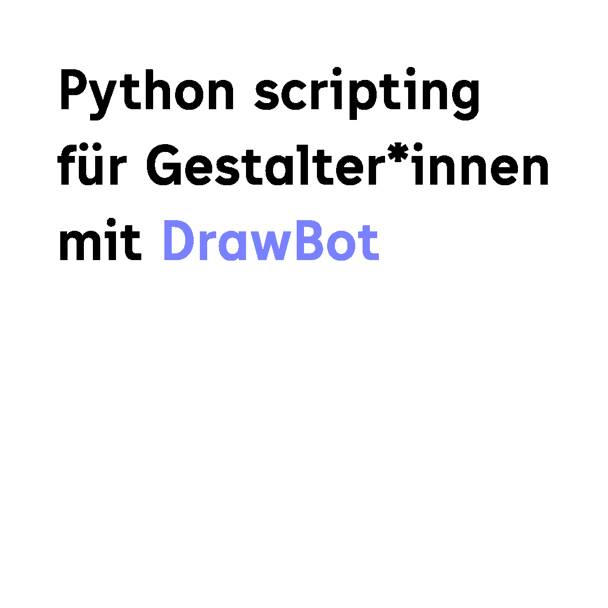
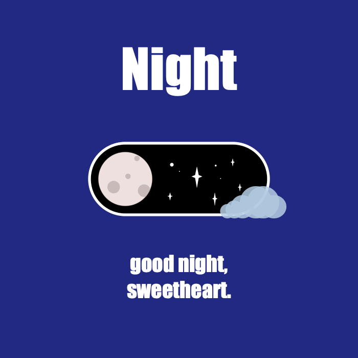
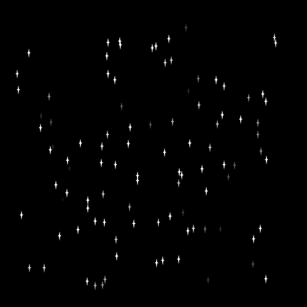
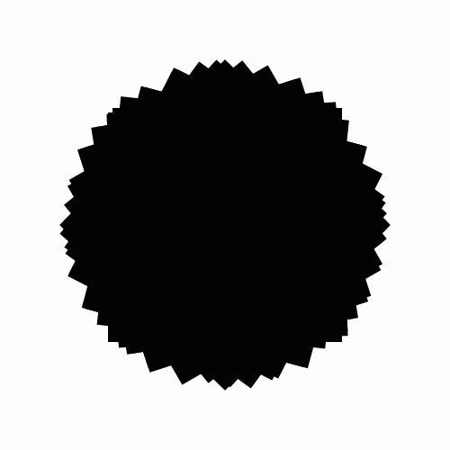
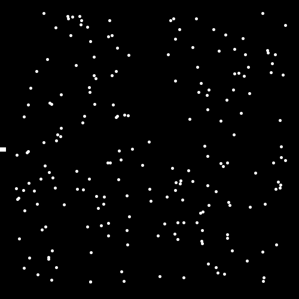
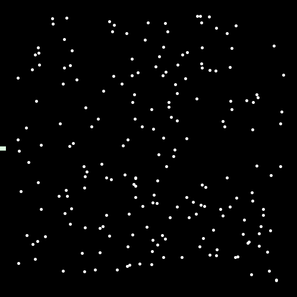

These are the results of our python workshop at HBKsaar. We learned how to write code in python and created graphics, animated gifs and videos.
This workshop was a first step into the world of programming, automation with code and lettig the computer work for us.


Nightshift – Viola Hertel

Spaced Out – Viola Hertel
Christmas Tree – Muriel Serf
Farbbalken – Muriel Serf

Outtakes – Muriel Serf
gif_e09 – Leon Fürtig
gif_e10 – Leon Fürtig
gif_e13 – Leon Fürtig
gif_e15 – Leon Fürtig
gif_e17 – Leon Fürtig

5 – Nina Kronenberger

KatzeGif – Sara Rink

UFO – Sara Rink

UFO2 – Sara Rink

Floating Seabed – Julian Bohlinger

Interdisciplinary Studies – Julian Bohlinger

Thrilling Tunnel – Julian Bohlinger